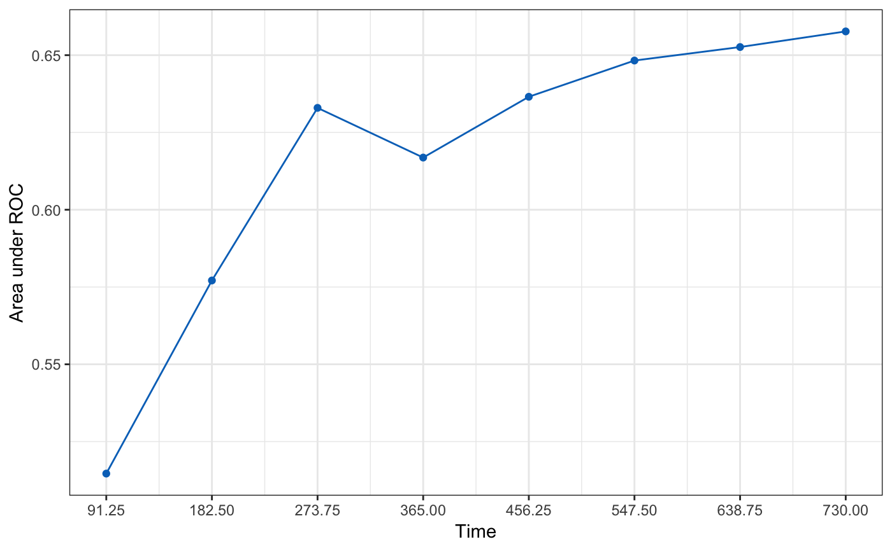

R/05-hdnom-external-validate.R
hdnom.external.validate.RdExternally Validate High-Dimensional Cox Models with Time-Dependent AUC
hdnom.external.validate(object, x, time, event, x_new, time_new, event_new, tauc.type = c("CD", "SZ", "UNO"), tauc.time)
| object | Model object fitted by |
|---|---|
| x | Matrix of training data used for fitting the model. |
| time | Survival time of the training data.
Must be of the same length with the number of rows as |
| event | Status indicator of the training data,
normally 0 = alive, 1 = dead.
Must be of the same length with the number of rows as |
| x_new | Matrix of predictors for the external validation data. |
| time_new | Survival time of the external validation data.
Must be of the same length with the number of rows as |
| event_new | Status indicator of the external validation data,
normally 0 = alive, 1 = dead.
Must be of the same length with the number of rows as |
| tauc.type | Type of time-dependent AUC.
Including |
| tauc.time | Numeric vector. Time points at which to evaluate the time-dependent AUC. |
Chambless, L. E. and G. Diao (2006). Estimation of time-dependent area under the ROC curve for long-term risk prediction. Statistics in Medicine 25, 3474--3486.
Song, X. and X.-H. Zhou (2008). A semiparametric approach for the covariate specific ROC curve with survival outcome. Statistica Sinica 18, 947--965.
Uno, H., T. Cai, L. Tian, and L. J. Wei (2007). Evaluating prediction rules for t-year survivors with censored regression models. Journal of the American Statistical Association 102, 527--537.
library("survival") # Load imputed SMART data data(smart) # Use the first 1000 samples as training data # (the data used for internal validation) x <- as.matrix(smart[, -c(1, 2)])[1:1000, ] time <- smart$TEVENT[1:1000] event <- smart$EVENT[1:1000] # Take the next 1000 samples as external validation data # In practice, usually use data collected in other studies x_new <- as.matrix(smart[, -c(1, 2)])[1001:2000, ] time_new <- smart$TEVENT[1001:2000] event_new <- smart$EVENT[1001:2000] # Fit Cox model with lasso penalty fit <- hdcox.lasso( x, Surv(time, event), nfolds = 5, rule = "lambda.1se", seed = 11 ) # External validation with time-dependent AUC val.ext <- hdnom.external.validate( fit, x, time, event, x_new, time_new, event_new, tauc.type = "UNO", tauc.time = seq(0.25, 2, 0.25) * 365 ) print(val.ext)#> High-Dimensional Cox Model External Validation Object #> Model type: lasso #> Time-dependent AUC type: UNO #> Evaluation time points for tAUC: 91.25 182.5 273.75 365 456.25 547.5 638.75 730summary(val.ext)#> Time-Dependent AUC Summary at Evaluation Time Points#> 91.25 182.5 273.75 365 456.25 547.5 638.75 #> AUC 0.5146531 0.5771193 0.6329524 0.6168784 0.636541 0.6482618 0.6526306 #> 730 #> AUC 0.6576868plot(val.ext)# ### Testing fused lasso, MCP and Snet models ### # library("survival") # # # Load imputed SMART data # data(smart) # # Use first 600 samples as training data # # (the data used for internal validation) # x = as.matrix(smart[, -c(1, 2)])[1:600, ] # time = smart$TEVENT[1:600] # event = smart$EVENT[1:600] # # # Take 500 samples as external validation data. # # In practice, usually use data collected in other studies. # x_new = as.matrix(smart[, -c(1, 2)])[1001:1500, ] # time_new = smart$TEVENT[1001:1500] # event_new = smart$EVENT[1001:1500] # # flassofit = hdcox.flasso(x, Surv(time, event), nfolds = 5, seed = 11) # scadfit = hdcox.mcp(x, Surv(time, event), nfolds = 5, seed = 11) # mnetfit = hdcox.snet(x, Surv(time, event), nfolds = 5, seed = 11) # # val.ext1 = hdnom.external.validate( # flassofit, x, time, event, # x_new, time_new, event_new, # tauc.type = "UNO", # tauc.time = seq(0.25, 2, 0.25) * 365) # # val.ext2 = hdnom.external.validate( # scadfit, x, time, event, # x_new, time_new, event_new, # tauc.type = "CD", # tauc.time = seq(0.25, 2, 0.25) * 365) # # val.ext3 = hdnom.external.validate( # mnetfit, x, time, event, # x_new, time_new, event_new, # tauc.type = "SZ", # tauc.time = seq(0.25, 2, 0.25) * 365) # # print(val.ext1) # summary(val.ext1) # plot(val.ext1) # # print(val.ext2) # summary(val.ext2) # plot(val.ext2) # # print(val.ext3) # summary(val.ext3) # plot(val.ext3)